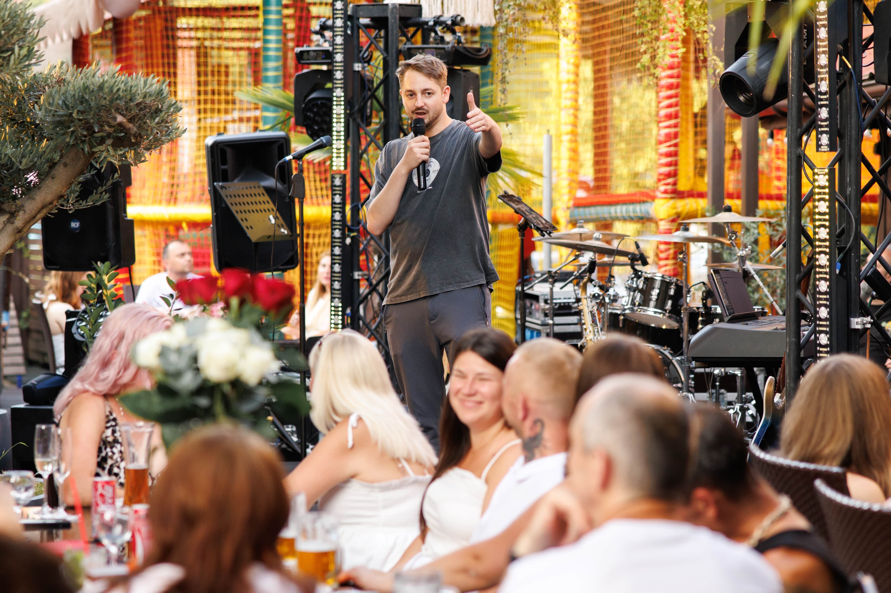
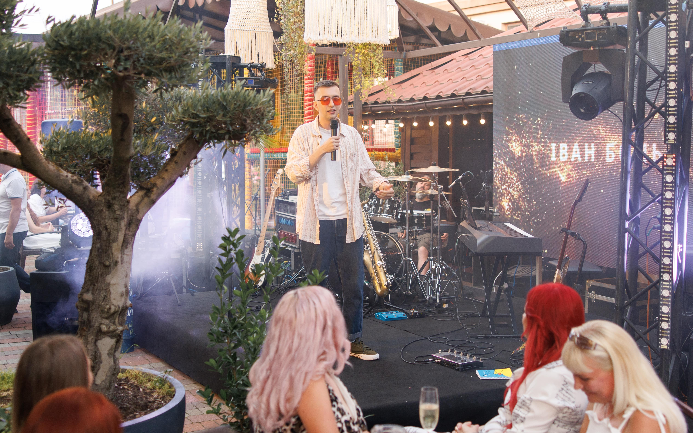

ШУМ
Закарпатський стендап-клуб "ШУМ"
Василь Шовак
Комік, який має за плечима 4 сольні концерти, та непомірну кількість інших стендап виступів які розпочались із першого виходу на сцену в цьому жанрі ще у далекому 2015 році! За весь цей час Вася набрався досвіду та великого багажу жартів. Його улюблений: "Ужгород - не дуже вдала назва для міста, бо якщо висохне Уж, то залишиться тільки город". Вася родом із Міжгірʼя, про що він часто згадує на своїх виступах. Окрім стендапу він уже 8 років працює в державних установах. Це також дуже позначається на його матеріалі, адже життєвих ситуацій, з яких можна розписати смішних історій, там безліч. Інколи можна подумати, що він не може бути настільки старим, адже виглядає підлітком, проте, коли він починає говорити, ви розумієте, що цей не дуже молодий чоловік родом ще з минулого тисячоліття. Тому можемо спокійно його назвати не лише динозавром нашого клубу а і взагалі закарпатського стендапу
Іван Бонь
Уроджинець села Горінчово! Один з коміків та співзасновників нашого клубу! 24 роки! За плечима 1 сольний концерт в Ляльковому театрі м.Ужгород. Вперше застендапив у День Дурня, що символічно. До речі, ця ж дата є Днем Народження нашого клубу! Саме в цей день 2018 року Ваня виграв 1000₴ на Відкритому мікрофоні і купив собі кросівки. Після цього і втрапив у пастку стендаперства. Улюблений жарт: "Коли я був малим, бабуся завжди маніпулювала мною та страшила мене, наприклад казала: 'Бачиш Ющенка!? Бачиш, що у нього з обличчям?... Їв сухарики!!!' Ми пишаємось Ваньою, бо саме він є прикладом продуктивності та відданості цьому жанру. За всі роки було лише кілька випадків, коли наші коміки виступали без Вані але і то лише тому, що він вже почав виступати і в інших містах України та ділитись своїм гумором з новими глядачами. До речі, в одному з таких випадків він виграв стендап проєкт і отримав ще одну 1000 але цього разу вже в доларах.
Вова Шпілька

Ведучий Палацу кульутри і мистецтв, весільний ведучий та шкільний вчитель. Перша спроба у жанрі стендап відбулась у далекому 2015 році в місті Мукачево на святковій вечірці одного клубного діджея. Насправді це важко назвати стендапом, бо матеріал був своєрідною солянкою з особистих жартів та тих, що вже гуляли в інтернеті. Справжній повноцінний стендап Вова вже видав на першому офіційному стендап вечорі в 2018 році у Мукачеві який організувала студія свят Мохіто! З часом подібного роду заходи почали відбуватись частіше. З моменту створення нашого клубу Вова відповідає за реалізацію стендапів Мукачева. 5 травня 2023 року в Палаці культури і мистецтв відбувся його перший і поки єдиний сольний стендап. До речі, буквально через кілька днів вже вийде відео цього сольника, тому слідкуйте за оновленнями на нашій сторінці. Сам Вова вважає себе досить грубим коміком оскільки нецензурна лексика дуже 'щедро' використовується в його монологах але він обіцяє виправити цю ситуацію. Улюблений жарт: 'Колись ми з дружиною вирішили подивитись порно аби побачити шо там нового в сексі. Ми знайшли дуже круте відео з дуже сексуальними акторами і в найбільш кульмінаційний момент вона видала фразу 'капєц у неї ноги грязні...'
ПРО НАС
Закарпатський стендап клуб «Шум» в Ужгороді – це творче об’єднання людей, закоханих у гумор та живий виступ. Його заснували троє коміків – Василь Шовак, Іван Бонь та Володимир Шпілька. Клуб швидко став головною платформою для стендапу на Закарпатті. Основна ідея «Шуму» – створити простір, де кожен може чесно й смішно ділитися думками зі сцени. Атмосфера клубу тепла та невимушена, що допомагає глядачам і комікам відчувати себе частиною однієї компанії. «Шум» регулярно організовує концерти, де виступають як місцеві таланти, так і запрошені коміки з інших міст України. Учасники клубу експериментують зі стилями, темами та подачею, тому кожен виступ відрізняється від попереднього. Василь Шовак відомий своєю харизмою та влучними спостереженнями з життя. Іван Бонь вирізняється інтелектуальним гумором і тонкими жартами. Володимир Шпілька привносить у виступи енергію та яскраву емоційність Клуб також має на меті розвивати локальну стендап сцену і робити Ужгород важливою точкою на гумористичній мапі України. Тут проводяться не лише концерти з визначеним складом коміків, а й відкриті мікрофони, де новачки можуть спробувати свої сили. «Шум» створює нову традицію культурних вечорів у містах Закарпаття, пропонуючи альтернативу стандартним розвагам. Його події завжди збирають різну публіку – від студентів до досвідчених поціновувачів гумору Завдяки щирості та таланту учасників клубу «Шум» перетворився на бренд ужгородського стендапу. Це місце, де сміх стає способом єднання та взаєморозуміння різних поколінь та різних поглядів. Тут немає жодних обмежень як для виступаючих, так і для глядачів. Чекаємо вас на наших виступах, класно проведений час гарантуємо
КОНТАКТИ